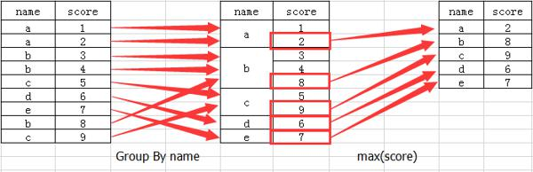

Pandas分组聚合
- 对数据集分组并对各组应用一个函数是数据分析中的重要环节
- 一般将数据准备好后，首先就是计算分组统计
- sql能够方便的连接、过滤、转换和聚合数据，但sql能执行的分组运算种类有限，Pandas则强大灵活的多
创建对象：姓名、历次测验语文成绩，数学成绩，英语成绩
df = pd.DataFrame({
'name': ['张三','李四','王五','李四','王五','王五','赵六'],
'chinese':np.random.randint(35,100,7),
'math':np.random.randint(35,100,7),
'english':np.random.randint(35,100,7),
'test': ['一','一','一','二','二','三','一']
})
df
df.index,df.columns
| chinese | english | math | name | test | |
|---|---|---|---|---|---|
| 0 | 75 | 69 | 36 | 张三 | 一 |
| 1 | 68 | 85 | 87 | 李四 | 一 |
| 2 | 54 | 42 | 59 | 王五 | 一 |
| 3 | 79 | 57 | 63 | 李四 | 二 |
| 4 | 54 | 35 | 92 | 王五 | 二 |
| 5 | 64 | 63 | 92 | 王五 | 三 |
| 6 | 61 | 53 | 76 | 赵六 | 一 |
数据聚合
一般指应用某些方法（自定义的聚合函数或系统自带Pandas的统计方法等）给数据降维
常见聚合方法：下面列举的都是非na值的计算结果
count 分组中值的数量
sum 值的和
mean 平均值
median 中位数
std var 无偏（分母为n-1）标准差和方差
min max 最小值，最大值
prod 积
# 按列求科目成绩平均值
df.mean()
# 按行求学生每次考试平均值
df.mean(axis = 'columns')
# 快速综合统计
# 有些方法（如describe）也可以用在这里，但它们并非聚合运算
df.describe()
自定义函数聚合方式见后
数据分组
分组：groupby()，一般指以下一个或多个操作步骤的集合
- Splitting 分组
- Applying 每个分组应用函数
- Combining 合并

# 创建group对象，未进行计算
df.groupby('name')
# 调用函数做分组计算，分组后求每组平均值
# 可将列名或列值当作分组对象，分组中数值列会被聚合，如果聚合是数值运算非数值列会从结果中排除
a = df.groupby('name').mean()
# 如果不想使用分组列作为索引，设置参数as_index=False
b = df.groupby('name',as_index=False).mean()
# 对多列分组后求平均值
c = df.groupby(['name','chinese']).mean()
c2 = df.groupby(['name','chinese'],as_index=False).mean()
| chinese | english | math | |
|---|---|---|---|
| name | |||
| 张三 | 44.000000 | 36.0 | 56.0 |
| 李四 | 72.000000 | 77.0 | 60.0 |
| 王五 | 79.333333 | 64.0 | 73.0 |
| 赵六 | 40.000000 | 86.0 | 40.0 |
选取1列或列的子集
对于大数据集，很可能只需要对部分列进行聚合
下列三种写法结果一样
- 传入标量形式的单个列名(单值列表)，返回Series
- 分组聚合传入列表或数组(多个值的列表，或者二维列表)，返回DataFrame
# 生成Series，传入单个列名
# 用name列对chinese列做分组，是下面写法的语法糖
df.groupby('name')['chinese'].mean()
# 等同于：
df['chinese'].groupby(df['name']).mean()
# 用name列对全部列做分组后，选取chinese列
df.groupby('name').mean()['chinese'] # 原理不同，但结果一样
############################
# 生成DataFrame，传入列表或数组
# 传入多个列名
df.groupby('name')['chinese','english'].mean()
# 三种写法生成DataFrame数据
df.groupby('name')[['chinese']].mean()
df[['chinese']].groupby(df['name']).mean()
df.groupby('name').mean()[['chinese']]
如，只计算学生各次考试的语文成绩平均值
df.groupby(['name','test'])['chinese'].mean()
df.groupby(['name','test'])[['chinese']].mean()
更多操作：
# 分组数据的个数，最常用
df.groupby('name').size()
# 分组数据在所有列的计数
df.groupby('name').count()
# 对分组后的部分列做统计
df.groupby('name')['math'].describe()
# 行列旋转
df.groupby('name')['math'].describe().unstack()
# 遍历分组对象，查看分组内容
for (method, group) in df.groupby('name'):
# print(method)
# print(group)
print(group.shape)
for (k1, k2), group in df.groupby(['name','test']):
print(k1, k2)
print(group)
# 数据片段做成一个字典
dict(list(df.groupby('name')))
# 按列分组
df.dtypes
grouped = df.groupby(df.dtypes, axis=1)
grouped.size()
for dtype, group in grouped:
print(dtype)
print(group)
通过外部列表进行分组
在 groupby 函数的输入中自定义分配每一行记录所属的分组
如果我们的输入就是原始数据集 df 中的某一列，那么这一列将被作为分组的依据，比直接输入列名繁琐
# 传入结构一样的列，传入列会作为分组基准对所有行分组
df.groupby(['张三','李四','王五','李四','王五','王五','张三']).mean()
df.groupby([0,0,0,0,0,0,0]).mean()
通过字典或Series进行分组
分组信息除了数组，还可以有其他形式，例如字典或Series对象
groupby 函数将会根据索引值进行分组，我们可以通过输入一个字典对象的方式，来给不同的索引值重新分配组别：
df2 = df.set_index('name')
df2
# 合并行计算
mapping = {'张三': '一个人', '赵六': '一个人', '李四': '李四new'}
df2.groupby(mapping).mean()
# 通过输入一个列表的形式来使多种映射同时生效：
df2.groupby(['name', mapping]).mean()
另一个例子
people = pd.DataFrame(np.random.randn(5, 5),
columns=['a', 'b', 'c', 'd', 'e'],
index=['Joe', 'Steve', 'Wes', 'Jim', 'Travis']
)
people.iloc[2:3, [1, 2]] = np.nan
people
# 假设已知列的分组关系，并希望根据分组计算列的和
mapping = {'a': 'red', 'b': 'red', 'c': 'blue','d': 'blue', 'e': 'red', 'f': 'orange'} # 多了一个f，不会影响分组
# 将字典传给groupby
by_column = people.groupby(mapping, axis=1)
by_column.sum()
Series类似字典，可以被看做一个固定大小的映射
map_series = pd.Series(mapping)
map_series
people.groupby(map_series, axis=1).size()
people.groupby(map_series, axis=1).count()
通过函数进行分组
比起字典或Series，函数是一种更原生的方法定义分组映射
任何被当做分组键的函数都会在各个索引值上被调用一次，其返回值就会被用作分组名称
people
# 按行索引的字符串长度（函数）分组求和
people.groupby(len).sum()
# 函数跟数组、列表、字典、Series混合使用，任何东西在内部都会被转换为数组
key_list = ['one', 'one', 'one', 'two', 'two']
people.groupby([len, key_list]).sum()
通过层次化索引的级别分组
要根据层次化索引的级别分组，使用level关键字传递级别序号或名字
columns = pd.MultiIndex.from_arrays([['US', 'US', 'US', 'JP', 'JP'], [1, 3, 5, 1, 3]], names=['cty', 'tenor'])
hier_df = pd.DataFrame(np.random.randn(4, 5), columns=columns)
hier_df
hier_df.columns
hier_df.groupby(level='cty', axis=1).count()
hier_df.groupby(level='tenor', axis=1).count()
练习：输出所有学生在所有考试次数中的数学平均分
从一个原始大表中抽取一个符合需求的小表
# 原始数据
df
# 所有人的所有科目的平均分
df.groupby('name').mean()
# 所有人在所有考试中的数学平均分
df.groupby(['name',df['test']])['math'].mean()
# 调整结构
df.groupby(['name',df['test']]).mean()['math'].unstack().fillna(0) # 堆叠，填充空值
自定义聚合方式
aggregate()，或agg()
aggregate函数的参数：
- 参数可以是列表，列表元素是指标的计算函数或特定的指标名字符串
- 参数可以是字典，函数会根据字典内容对指定列进行不同的指标计算
- 参数可以是系统或自定义函数，各分组都进行计算后返回结果
df
# 分组聚合
df.groupby('name').mean()
# 等价于
df.groupby('name').agg('mean')
# 聚合参数是列表
df.groupby('name').agg(['min',max,np.mean])
# 自定义聚合后的列名
df.groupby('name').agg([('name_min', 'min'),('name_max',max)])
# 聚合参数是字典
df.groupby('name').agg({'chinese': 'min', 'math': 'max'})
df.groupby('name').agg({'chinese': ['min','max'], 'math': 'max'})
# 聚合是自定义函数
# 自定义聚合函数要比系统自带的、经过优化的函数慢得多。
# 因为在构造中间分组数据块时存在非常大的开销（函数调用、数据重排等）
def peak_to_peak(arr):
return arr.max() - arr.min()
df.groupby('name').agg(peak_to_peak)
df.groupby('name').agg(['mean',peak_to_peak])
df.groupby(['name', 'test']).agg(['mean',peak_to_peak])
| chinese | english | math | |||||||
|---|---|---|---|---|---|---|---|---|---|
| min | max | mean | min | max | mean | min | max | mean | |
| name | |||||||||
| 张三 | 44 | 44 | 44.000000 | 36 | 36 | 36 | 56 | 56 | 56 |
| 李四 | 57 | 87 | 72.000000 | 72 | 82 | 77 | 44 | 76 | 60 |
| 王五 | 68 | 85 | 79.333333 | 39 | 79 | 64 | 46 | 94 | 73 |
| 赵六 | 40 | 40 | 40.000000 | 86 | 86 | 86 | 40 | 40 | 40 |
其他分组运算
运用 groupby 函数进行分组后，我们能做的事情还有很多，并不局限于聚合汇总
利用 fliter 函数来对分组进行筛选，留下符合条件的分组
def filter_func(x):
return x['math'].mean() >= 60 # 数学成绩平均值大于等于60分
e = df.groupby('name').filter(filter_func)
e.groupby('name').mean()
使用 transform 函数对所有的数据元素进行转换计算
# 所有列减去60
def j(x):
return x - 60
df.groupby('name').transform(j)
apply：一般性的“拆分－应用－合并”
最通用的GroupBy方法是apply
apply传入的函数返回一个pandas对象或标量值，函数能做什么完全由你自主
apply会将待处理的对象拆分成多个片段，然后对各片段调用传入的函数，最后尝试将各片段组合到一起
运用 apply 函数，我们可以一次性对所有的分组进行不同规则的运算（一般性运算，不局限于聚合函数，效率低于agg但通用型强）
举例
def a2(x):
# return x.max() # 聚合
# 非聚合，单独计算各列
x['chinese'] = x['chinese'] + 10
x['english'] -= 10
return x
df.groupby('name').apply(a2)
例子：将学生某科成绩按由低到高排序，并返回需要的个数
返回语文成绩最低的前三条数据
原生函数运算：
df
# 按语文成绩排序
df.sort_values(by='chinese')[:3] # by：以哪列为基准排序
# 应用函数实现
def top(x, n=1, column='chinese'):
return x.sort_values(by=column)[:n]
top(df, n=3)
- 返回所有同学语文成绩最低的1次考试成绩
- 返回所有同学数学成绩最低的2次考试成绩
运用apply方法：
# 对name列分组并用apply调用函数
df.groupby('name').apply(top)
# top函数在DataFrame的各个片段上调用，然后结果由pandas.concat组装到一起，并以分组名称进行了标记。
# 最终结果有一个层次化索引，其内层索引值来自原DataFrame
# 如传给apply的函数需接受参数，将内容放在函数名后面一并传入
df.groupby('name').apply(top, n=3, column='math')
groupby调用describe()方法:
# 之前我在GroupBy对象上调用过describe
result = df.groupby('name')['chinese'].describe()
result
result.stack() # stack，堆叠
result.unstack() # unstack:不堆叠
#####
df.groupby('name').describe()
# 在GroupBy中，当你调用诸如describe之类的方法时，实际上只是应用了下面两条代码的快捷方式
f = lambda x: x.describe()
df.groupby('name').apply(f).unstack()
禁止分组键
分组键会跟原始对象的索引共同构成结果对象中的层次化索引
将group_keys=False传入groupby即可禁止该效果
df.groupby('name').apply(top) # 层次化索引
df.groupby('name', as_index=False).apply(top) # 不使用分组列做索引，变成默认索引
df.groupby('name', group_keys=False).apply(top) # 完全删除新生成的索引